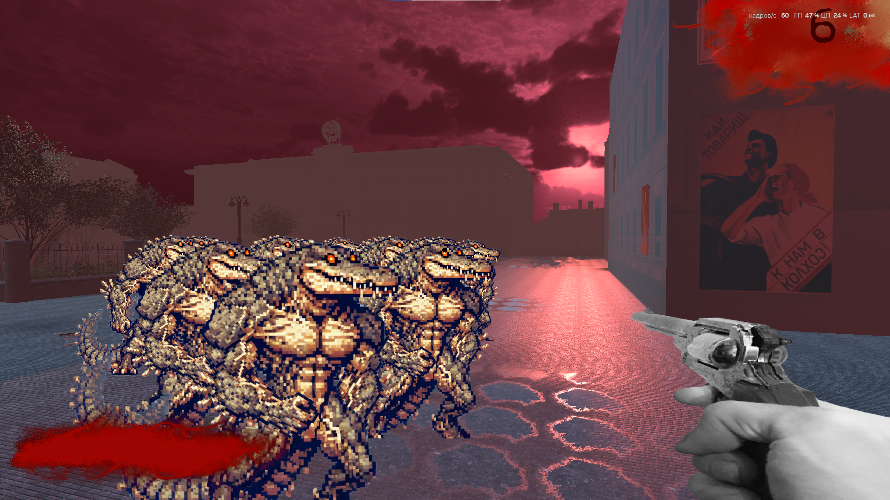
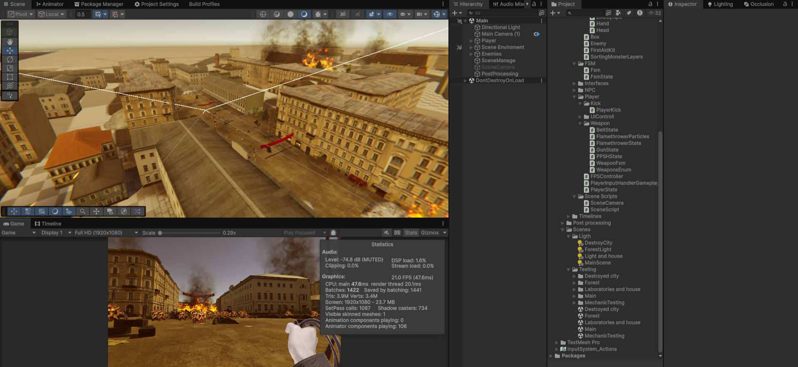

Доработка
После завершения геймджема поступило предложение доработать игру, чтобы можно было создать геймплейный трейлер. Появились новые локации, оружия ваги. Была доработаны механика взаимодействия с интерактивными объектами и синематики.
Конечный продукт
Конечным продуктом является геймплейный трейлер.
Пост на gamedev.ru
Youtube
GitHub